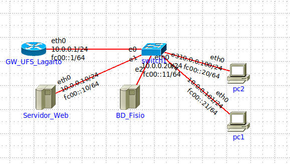

Projeto: Laboratório de Fisioterapia
Pesquisa: Avaliação e Intervenção Fisioterapêutica nos Ciclos da Vida
Responsável: Profª. Dra. Marcela Ralin
Responsável: Profª. Dra. Marcela Ralin
Mapa Visual da Rede
